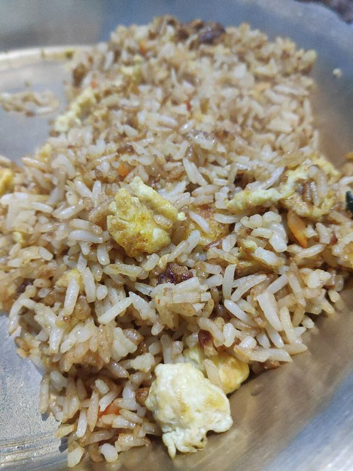
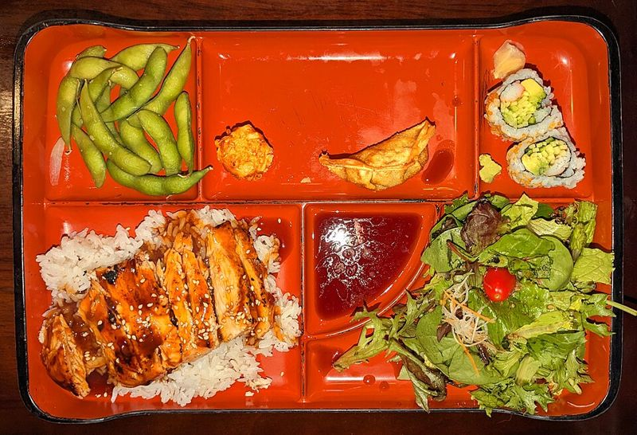

Full redesign, set 2: warmer and more inviting
Brighter, friendlier, photo-first, closer to apps people already love, but each with its own idea. All three screens per direction, with your real photos. Pick one or mix parts.
Feels like a polished grocery app. Ingredients are added like produce into a basket: soft tinted category tiles with a little count, and a dark "basket bar" at the bottom that shows what you've got and how many dishes it makes. Fresh leaf green, rounded, airy.
Risk: close to grocery-delivery apps; needs the basket bar to feel like its own thing.
Home
What to CookClear all
Good evening 👋
What's in your kitchen?
🔍 Search ingredients
Your basket 4 items
Chicken ✕
Garlic ✕
Soy sauce ✕
Rice ✕
Browse the market
🍗Meat & protein
15 items1
🐟Seafood
9 items
🥚Eggs & dairy
11 items
🥬Vegetables
30 items1
🍎Fruits
8 items
🍚Rice & noodles
16 items1
🍗🧄🍚
4 ingredientsmakes 12 dishesSee recipes Results
← 12 recipesEdit basket
Ready to cook
Under 30 min
Easy

✓ Ready to cookEgg fried rice15 min · Easy · 2 servings
+ 1 ingredient
Chicken adobo45 min · Easy · Needs vinegar

+ 2 ingredientsChicken teriyaki30 min · Easy
Recipe
Chicken adobo
45 min · 4 servings · Easy
✓ Chicken✓ Garlic✓ Soy sauce+ Vinegar
Steps 1 of 4
1Combine chicken, soy sauce, vinegar and garlic. Marinate 30 minutes.
2Bring to a boil, then simmer covered for 30 minutes.
Start cooking
Cheerful, grown-up fun. Little round produce stickers do the talking: "Ready!", "+1", "15 min" stuck at a tilt on the food photos. Pantry categories are round produce badges. Bright citrus orange with sunny yellow and fresh green, lots of white.
Risk: the most playful of the set; must stay tidy so it doesn't feel childish.
Home
What to CookClear all
What's in your kitchen?
🔍 Add an ingredient
You have 4
Chicken ✕
Garlic ✕
Soy sauce ✕
Rice ✕
Pick from the pantry
🍗1Meat
🐟Seafood
🥚Eggs & dairy
🥬1Veggies
🍎Fruits
🍚1Rice
🧂1Sauces
🌿Herbs
Find recipes (4)
Results
← RecipesEdit
Egg fried rice15 min · Easy
Chicken adobo45 min · Easy
Chicken tinola40 min · Easy
Recipe
Chicken adobo
45 min · 4 servings · Easy
✓ Chicken✓ Garlic✓ Soy sauceNeed vinegar
Steps
1Combine chicken, soy sauce, vinegar and garlic. Marinate 30 minutes.
2Bring to a boil, then simmer covered for 30 minutes.
Inspiring, like a food magazine that knows your fridge. The home screen leads with a big, mouth-watering photo: "Tonight you could make Egg fried rice", picked from what you have. Ingredients sit below. Warm paprika-orange accent, generous photos everywhere, bold friendly type.
Risk: the "tonight" pick needs a quick backend call as your list changes (small addition, still free).
Home
What to CookClear all
See all 12 →Tonight you could makeEgg fried rice✓ You have everything · 15 min
🔍 Add an ingredient
Your ingredients 4
Chicken ✕
Garlic ✕
Soy sauce ✕
Rice ✕
Browse All categories
🍗 Meat · 1
🥬 Veggies · 1
🐟 Seafood
Find recipes (4)
Results
← For your kitchenEdit
Ready now 2
Egg fried rice15 min · Easy · You have everything
One shop away 5
Recipe
Chicken adobo
45 min · 4 servings · Easy
✓ 3 you have+ Vinegar
1Combine chicken, soy sauce, vinegar and garlic. Marinate 30 minutes.
2Bring to a boil, then simmer covered for 30 minutes.
Start cooking
Category standardThe best recipe apps, done right
What Kitchen Stories, Tasty and SideChef ship, at full polish. Clean white, one appetising orange, rounded photo cards, a simple checklist for ingredients with a segmented "Pantry / Search" switch. Instantly familiar.
Risk: looks like everyone else by design.
Home
What to CookClear all
What's in your kitchen?
Meat & protein 1 selected
Vegetables 1 selected
Find recipes (4)
Results
← RecipesFilter
Egg fried rice15 min · Easy · Ready
Chicken adobo45 min · Easy · Missing 1
Chicken teriyaki30 min · Missing 2
Recipe
Chicken adobo
45 min · 4 servings · Easy
✓ Chicken✓ Garlic✓ Soy sauceNeed vinegar
1Combine chicken, soy sauce, vinegar and garlic. Marinate 30 minutes.
2Bring to a boil, then simmer covered for 30 minutes.
Emoji are placeholders in these sketches; the app uses proper icons. "Good evening", "makes 12 dishes" and the "Tonight" pick are ideas that would need small additions.